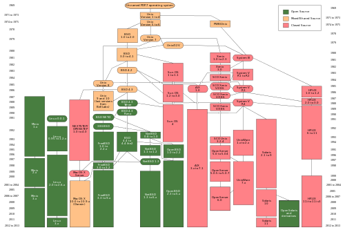

Unix CLI¶
The objective of this practice is to get used to the Unix Comand Line. Unix is a family of Operating Systems. Linux and MacOS X are two examples of unix OSs.
{kind=link}
The Shell, or terminal, or Command Line Interpreter, is a software that will execute software in a computer by interpretring a text input from the user.
The result of the software is usually shown by the operating system in the same text terminal. In the shell the interaction is very simple. The user writes a command, the Operating System executes the command and the result is shown in the same shell.
CLI chacteristics:
Some software is written only with a CLI, so we have to use it in a shell
There is a lot of bioinformatic software that is only available via CLI
The terminal is more difficult to use because we have to know which command to write
CLI software tends to be more versatile
It is very easy to document what we have written in a CLI
CLI software is very easy to include in a script, so it is very easy to automate the tasks
CLI requires few resources.
It is very easy to interact via network with computers by using the CLI
The prompt¶
When a user starts a CLI session is shown a prompt:
user@computer:~$
The computer is showing the user that is waiting to recieve a written command. A command is in fact some software available in the computer ready to be executed.
We might try to run the command hello:
user@computer:~$ hello
The result would be something like:
bash: hello: command not found
We can also run some command that do exist:
user@computer:~$ ls
The working directory¶
Whenever we are in a shell we have a working directory defined. This is the directory in which the files required by the commands exectued are to be found unless the computer is told otherwise.
In a Linux system the default working directory is usually a subdirectory withing /home. If we are the use John our default working directory would be /home/john.
It is also common to use the synonym folder to talk about directories.
If we run the command ls to LiSt the files and subdirectories within a directory and we do not tell ls which directory to use, by default ls will get the list for the current working directory:
user@computer:~$ ls
We could instruct ls to list a different directory. For instance:
user@computer:~$ ls /usr/
It is very usual to talk about the working directory as a place in the computer. So you will hear instructions like: “Go to the /etc/ directory and excecute the ls command”
Be aware that in most Unix systems the case matters. The directories /HOME and /home would be different.
How to stop a running process¶
There a different ways to stop a running process, but the most simple one would be ctrl + C. Although this way won’t always work.
Exit from a terminal¶
You can execute the command exit:
user@computer:~$ exit
Or you can do ctrl + D
Unix directory hierarchy¶
In unix the file system is hierarchycal. That means that a directory can include subdirectories.
All directories are subdirectories of the special directory root. The root directory is represented in the unix terminal as /.
user@computer:~$ ls /
There is a Filesystem Hierarchy Standard defined for the Unix Operating Systems, but you will find some variations within the standard.
Users have a subdirectory within /home/ in which they can write. (In MacOS X it is within /Users). That directory is usually refered to as the $HOME directory. Users a not usually allowed to write outside their $HOME directory.
Many times you will find your $HOME directory represented by ~.
user@computer:~$ ls ~
Paths¶
The path is the unique location of a file in a file system in a computer. A path points to a file by following the directory tree up to the point in with the file is.
/home/john/documents/notes.txt
In Unix directories and subdirectories a separated by a forward slash /.
/home/john/
Note that other Operating Systems they use the backslach \.
Absolute vs relative paths¶
An absolute path points to a file regardless of our current working directory. Imagine that we have the following directories and files.
/home/john/
/home/john/documents/
/home/john/documents/notes.txt
The absolute path to the notes.txt file would be: /home/john/documents/notes.txt. The absolute path points to the location of a file by starting from the root directory.
If our current working directory is /home/john the relative path would be:
documents/notes.txt
Note that there is no slash at the begining, this is how relative and absolute paths are differentiated.
The relative path depends on which is our current working directory. If we are in /home/john/documents the path to the notes.txt file would be:
notes.txt
And if we were in /home it would be:
john/documents/notes.txt
File name advices¶
Remember to take the case into account. Hello.txt, HELLO.TXT and hello.txt are three different files.
Although you can use spaces in the file names everything will be easier if you don’t. Instead of spaces you can use underscores _.
Also, try to avoid using non-english characters. They won’t be a problem if you are using the files within the same system, but if you send them to another system the named could end up mangled.
Some commands to work with files¶
CoPy a file cp:
user@computer:~$ cp file1.txt file2.txt
ReMove (delete) a file, rm:
user@computer:~$ rm file1.txt
MoVe or rename a file, mv:
user@computer:~$ mv file1.txt new_name.txt
user@computer:~$ mv file1.txt another_dir/
Some commands to work with directories¶
Create a directory:
user@computer:~$ mkdir some_directory
user@computer:~$ ls
Change the working directory:
user@computer:~$ cd some_directory
We could had also use an absolute path:
user@computer:~$ cd /home/john/some_directory
Print the current Working Directory:
user@computer:~$ pwd
The cd command run with no parameters will send us to our default working directory.
user@computer:~$ pwd
/home/john/some_directory
user@computer:~$ cd
user@computer:~$ pwd
/home/john/
Change to one directory up in the directory hierarchy.
user@computer:~$ cd ..
Remove a directory
user@computer:~$ rm -r some_directory
rm, the remove command can delete files and directories, but if we want to remove a directory we have to use the parameter -r because we want to remove recursively everything within the given directory.
To copy a directory we also have to do it recursively
user@computer:~$ cp -r directory1 directory2
Move (or rename) a file or a directory
user@computer:~$ mv directory1 directory2
Commands and parameters¶
We can modify the behaviour of almost any command in the command line by using optional parameters.
In the most common case these parameters will be componsed by a dash and a letter -a or two dashes and a word –all.
user@computer:~$ ls -a
user@computer:~$ ls --all
Directory listings¶
The command ls LiSts the directory contents: files and subdirectories.
user@computer:~$ ls
In the Unix systems, by convention, the files and directories that have a name that starts with a dot, like .hidden, will be considered hidden. That it is done to hide some files and directories that are usually not directly used by the user. The user can list them by using the parameter -a.
user@computer:~$ ls -a
We can ask ls to give us more information about a file.
user@computer:~$ ls -l
Getting Help¶
Most Unix commands have a manual available in the terminal. We can access the manual using the command man:
user@computer:~$ man ls
Once we run the man command we enter in an interactive viewer and the prompt disapears. To leave the manual viewer press q.
Another way to get a summary of the manual is to use the parameters -h, –help, -help. The exact syntax will depend on the command, although in most cases -h will show a brief help text and –help will show a lengthier text.
Wildcards¶
We can refer to a group of files or directories instead of just one by using wildcards.
The asterix * will be substituted by any character any number of times. For instance, if we want to delete all files that end with “.txt” we could do:
user@computer:~$ rm *.txt
Practice¶
How many files and directories can you find in the “root” directory. And in our $HOME?
Create a directory named experiment
Copy the file /etc/passwd to the directory experiment
Rename the file as passwd.txt
Go back to your $HOME and from there list the files within the directory experiment.
Copy the file passwd.txt to passwd2.txt
Remove all files in the experiment directory that have a 2.
Copy the directory experiment to experiment2
Delete the directory experiment
Rename the directory experiment2 as experiment